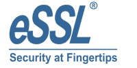
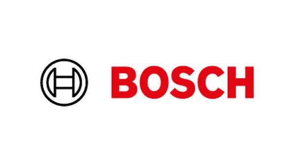

How It Works
Seamless flow management combining speed, zero-trust cryptographic validation, and emergency life safety.
1. Credential Authentication
Facial recognition, dynamic QR codes, and NFC/BLE mobile wallets.
2. Logic and Verification
A centralised IP controller validates identity and generates an encrypted audit log.
3. Physical Flow Gate
Speed gates, turnstiles and doors that open only for verified identities.
Operational Outcomes
Works With

eSSL
BoschFrequently Asked Questions: Access Control
Zero-trust identity verification, credentials, barriers, and emergency overrides.
An intelligent access control system manages entry to buildings, rooms, and restricted areas by verifying credentials and permissions before allowing access.
The brochures identify facial recognition, dynamic QR codes, NFC and Bluetooth Low Energy (BLE) mobile credentials, intelligent IP controllers, and physical access barriers.
Yes. Facial recognition is among the credential methods described in the TrustNexus brochures. Availability depends on the selected hardware, software, and implementation requirements.
Mobile access is supported through compatible NFC and BLE credentials. The exact functionality depends on the selected mobile credential platform and access control equipment.
Yes. TrustNexus describes IP-based access controllers that can validate occupant identities against IT databases and generate system audit logs.
Available options described in the brochures include tripod turnstiles, speed gates, full-height barriers, and vehicle boom barriers.
TrustNexus describes programmed life-safety overrides that can release designated locks and barriers during configured emergency conditions. The behavior must be designed and tested according to applicable safety requirements.
Yes. Access control can be configured for different facility types, including offices, industrial environments, campuses, and restricted operational areas, according to their security and access requirements.
Protecting What Matters Most
We don't just install systems. We engineer secure, intelligent and resilient environments that keep businesses connected, protected and prepared for the future.